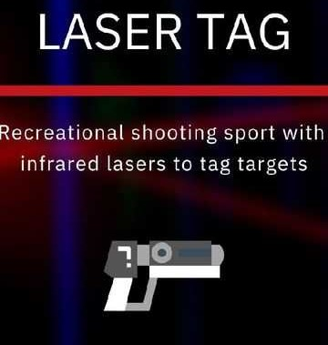
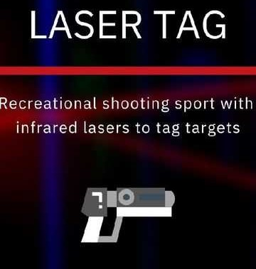
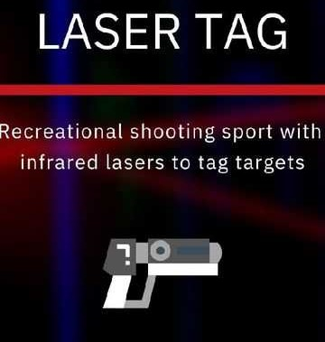
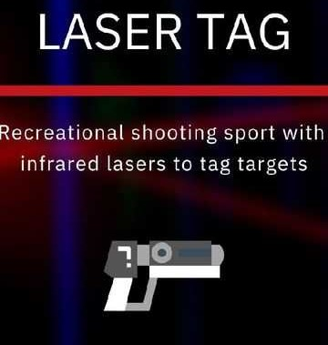

 

Symbiosis Institute of Technology, Pune proudly welcomes you to
SYMBITECH 2022, the annual technical festival, organized on the
28th and 29th of September, 2022.
SYMBITECH will help young minds, broaden their vision, and
surrender to their instincts for knowledge.
The theme of this technical fest would revolve around
COSMOS!
SYMBITECH is all set to blow up everyone's mind with lots off
challenging events and knowledge hunts.
1. 3D Model Design - Designing a model on AutoCAD to 3D print it
2. AI Model -
Present a prototype project implementing the use of Artificial Intelligence
3. Android Artists -
Debug the given code to make the final app
4. Best out of Goods
5. Car parts Assembly
6. Circuit-o-Mania
Rectify the given circuit.
7. Data Science Visualization -
Visualize the given data set using various data-vis tools
8. Drive the bot
Assemble given bot and drive it through the course
9. FloataRIG -
A competition to design a floating platform for deep sea
wind farms that must withstand turbulent current, high speed
winds and changing tides while efficiently generating power
10. Laser Cutting -
Laser cutting the material after making a 2D design and assembling it.
11. Lathe Wars -
Make the final product with the help of materials provided in the workshop.
12. Model testing: Constructo -
On-spot model making consists of a bridge framed structures using
balsa sticks and ice cream sticks.
13. Model testing: Resilience -
Get your measurements right with precision and accuracy and build
the tallest building to withstand the two most powerful forces of
nature- wind and earthquake load.
14. Weaving the Web -
Fix the incomplete code of the website.
15. CodeWars -
Hackathon in which problem statements are related to the theme.